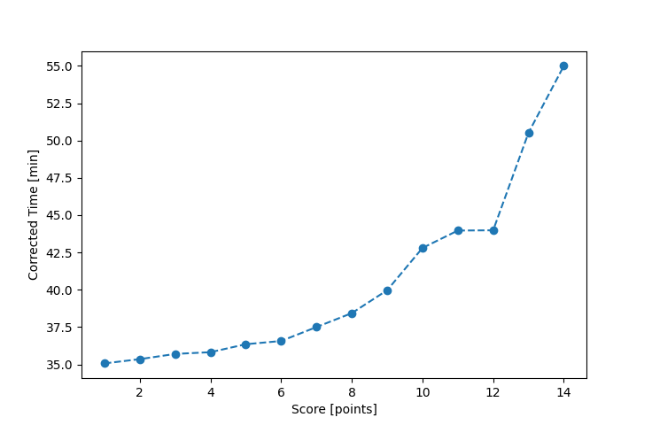

| Wind: | 2-3 (BFT) |
|---|---|
| RC: | John_T, Ralph_H, Betsy_H |
| Date: | June 04, 2016 |
| Notes: | I2 270 |
| Rank / Score | Name | Boat | Input Time [mm:ss] | Input Offset [mm:ss] | Race Time [mm:ss] | Race Time [s] | Handicap | Corrected Time [s] | Corrected Time [mm:ss] |
|---|---|---|---|---|---|---|---|---|---|
| 1.0 | Ron_F | F5 | 29:20 | 00:00 | 29:20 | 1760 | 0.96600 | 1822 | 30:22 |
| 2.0 | Jack_A | SWSX | 30:13 | 00:00 | 30:13 | 1813 | 0.95900 | 1891 | 31:31 |
| 3.0 | Rod_H | PUF | 35:21 | 00:00 | 35:21 | 2121 | 1.11800 | 1897 | 31:37 |
| 4.0 | Mike_F | SF | 32:49 | 00:00 | 32:49 | 1969 | 1.00400 | 1961 | 32:41 |
| 5.0 | Bill_P | SF | 35:02 | 00:00 | 35:02 | 2102 | 1.00400 | 2094 | 34:54 |
| 6.0 | David_Bu | SF | 35:13 | 00:00 | 35:13 | 2113 | 1.00400 | 2105 | 35:05 |
| 7.0 | Barry_O | HLR14 | 39:37 | 00:00 | 39:37 | 2377 | 1.11700 | 2128 | 35:28 |
| 8.0 | Nedra_F | SF | 35:44 | 00:00 | 35:44 | 2144 | 1.00400 | 2135 | 35:35 |
| 9.0 | Chris_E | SF | 36:25 | 00:00 | 36:25 | 2185 | 1.00400 | 2176 | 36:16 |
| 10.0 | Pat_B | WF | 34:32 | 00:00 | 34:32 | 2072 | 0.91700 | 2260 | 37:40 |
| 11.0 | Sara_M | SWSX | 37:45 | 00:00 | 37:45 | 2265 | 0.95900 | 2362 | 39:22 |
| 12.0 | Stacy_O | SWSX | 38:27 | 00:00 | 38:27 | 2307 | 0.95900 | 2406 | 40:06 |
| 13.0 | Michael_L | BNSH | 39:11 | 00:00 | 39:11 | 2351 | 0.94500 | 2488 | 41:28 |
| 14.0 | Lewis_V | BCN | 38:16 | 00:00 | 38:16 | 2296 | 0.87000 | 2639 | 43:59 |

Application Notes:
All race results are unofficial
View source code at https://github.com/cessnao3/portsmouthracecalc/